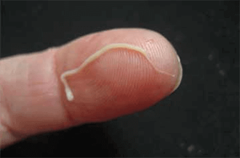
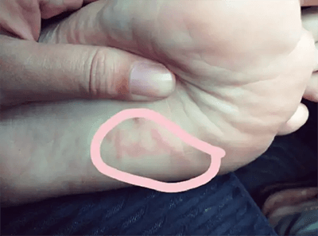
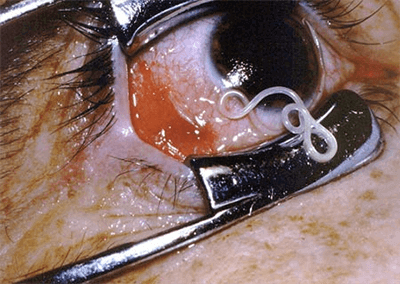

“มีปรสิตหลายพันตัวที่อาศัยอยู่ในตับสมองปอดเลือดกระเพาะอาหารและส่วนใหญ่เป็นอันตราย มันเริ่มต้นด้วยกลิ่นจากปาก”
สวัสดีค่ะทุก ๆ คน เรามณีเองนะคะ หวังว่าทุกคนจะจำกันได้ ขอโทษทีนะคะหายไปนาน ยุ่งๆน่ะค่ะ ตอนนี้ณีกลับมาแล้วค่ะ เลยอยากจะมาแชร์ประสบการณ์กำจัดพยาธิของตัวเองนิดนึง
เวลาที่คุณเห็นคนที่คุณรักรู้สึกไม่สบาย ทรมาน แล้วคุณช่วยอะไรไม่ได้เลย คุณรู้สึกแย่ไหมคะ นี่แหละค่ะคือสิ่งที่เกิดกับตัวเราเอง เราเลยอยากมาเล่าให้ฟังถึงสิ่งทีเกิดขึ้นกับคนที่เรารัก เพื่อเป็นอุทาหรณ์เดือนใจให้ทุก ๆ คนได้ฟังกัน คุณจะได้ไม่ต้องทำผิดพลาดเหมือนที่เราทำ
เรากับสามีแต่งงานอยู่กินกันมา 27 ปีแล้ว ตลอดเวลา 27 ปีที่อยู่ด้วยกัน เราไม่เคยทะเลาะกันเลย แถมเพื่อน ๆ ยังชอบแซวเราว่าเหมือน "ข้าวใหม่ปลามัน" ตลอดเลย เรา 2 คนวางแผนไว้ว่าอยากทำนั่นทำนี่ด้วยกันหลายอย่างในอนาคต
แต่จุดเริ่มต้นของปัญหามันอยู่ตรงที่ สามีของเราเริ่มบ่นว่า เขาเริ่มมีกลิ่นปากและ ปากเหม็น มากขึ้น ๆ ทุกวัน ด้วยเหตุที่เราเคยเป็นหมอมาก่อน เราเลยให้เขาไปหาหมอฟันแล้วก็ไปตรวจช่องท้อง แต่ก็ไม่พบอะไรที่ผิดปกติ
แล้วเขาก็ เริ่มมีอาการอื่นๆ ที่น่าเป็นห่วงปรากฎให้เห็นอีก
สามีเริ่มมีอาการ ท้องอืด ตอนนี้เขากินอาหารได้น้อยลงและเริ่มผอมลงอย่างเห็นได้ชัด
แล้วเราก็เริ่มได้ยินเขาบ่นเรื่องโรคอื่นๆ ที่ตามมาไม่ว่าจะเป็นปัญหาเกี่ยวกับอาการเจ็บหรือเสียวที่ หัวใจหรือบริเวณตับ เราพาเขาไปตรวจคลื่นหัวใจไฟฟ้า ตรวจเลือด แต่ผลก็ออกมาว่าทุกอย่างปกติดี ไม่มีอะไรผิดปกติทั้งสิ้น
สิ่งที่แย่ที่สุด คือ ความสัมพันธ์ในชีวิตคู่ของเราเริ่มแย่ลง วันหนึ่งสามีมาหาเรา แล้วบอกเราว่า ตอนนี้เขามีปัญหาเรื่องการแข็งตัว เราไม่อยากเชื่อว่า ผู้ชายที่แข็งแรงแบบเขาเนี่ยนะ อยู่ๆ ก็กลายเป็น ตาแก่ ดูห่อเหี่ยว หมดอาลัยตายอยากในชีวิต
เราพาเขาไปตรวจที่โรงพยาบาลอีกที่หนึ่ง หมอที่นั่นวินิจฉัยออกมาว่า สามีของเรา ติดเชื้อปรสิต หรือที่พูดให้เข้าใจง่ายๆ คือ มีพยาธิอยู่เต็มท้องของสามีเราเลย คือ เกือบ 70% ของร่างกายของสามีเรามีพยาธิแฝงอยู่เต็มไปหมด เราไม่เข้าใจเท่าไหร่เลย เราไม่รู้ว่าเขาไปรับเชื้อปรสิตพวกนี้มาจากไหน เพราะบ้านของเราสะอาดมาก อาหารทุกอย่างจัดเตรียมอย่างดี กินร้อน ใช้ช้อนกลางตลอด พอได้ยินแบบนี้ก็อึ้งไปเหมือนกัน อาการที่ไม่รุนแรงทั้งหมดนี้เป็นสัญญาณเตือนให้รู้ว่ากำลังมีพยาธิยั้วเยี้ยะอยู่ในร่างกาย
สิ่งที่หมอพูดวนเวียนอยู่ในความคิดของเราตลอด มันเกิดขึ้นได้ยังไงกัน เราพาสามีไปตรวจร่างกายเพิ่มเติม แล้วเราก็ถามคนรู้จักหลายคนที่เป็นหมอด้วยค่ะ สิ่งที่พวกเขาตอบเรามาทำให้เราช็อกมาก

"อาการทั้งหมดที่สามีของคุณมีคือสัญญาณแรกของ การติดเชื้อปรสิตหรือพยาธิ เมื่อมีเชื้อปรสิตหรือพยาธิอยู่ในร่างกาย ร่างจากจะเริ่มเสื่อมลงอย่างช้า ๆ ในตอนแรก ๆ ยังเห็นได้ไม่ชัดเจนมากนัก แต่อาการหลัก ๆ ที่จะแสดงออกมาในตอนเริ่มแรก คือ ปากเหม็น ท้องอืด ซึมเศร้า ปวดหัว ใต้ตาดำ เบื่ออาหาร ปวดตามข้อ และสำหรับผู้ชาย พยาธิจะทำให้ ต่อมลูกหมากอักเสบ อวัยวะเพศไม่แข็งตัว เสื่อมสมรรถภาพทางเพศ โรคหัวใจและโรคตับ ส่วนสำหรับผู้หญิง พยาธิจะทำให้ช่องคลอดอักเสบ รังไข่บวม กระเพาะปัสสาวะอักเสบ เนื้อเยื่อในรังไข่เจริญเติบโตผิดปกติ มะเร็งรังไข่ ไตบวม ติดเชื้อในระบบทางเดินปัสสาวะและไต รวมไปถึงแก่เร็ว สำหรับเด็ก หากเด็กคนไหนมีพยาธิในร่างกายเป็นจำนวนมาก จะมีอาการตาแฉะอยู่เสมอ อาการส่วนใหญ่ที่เกิดขึ้นเป็นอาการที่ไม่รุนแรงนักในตอนแรก ดังนั้น จึงทำให้ถูกละเลยอยู่เสมอ เมื่อปล่อยไว้นานจนเกินไป จะทำให้อวัยวะภายในถูกทำลายและอาจจะนำไปสู่สาเหตุการเสียชีวิตได้"
เพื่อนๆรู้ไหมคะว่ากว่า 850,000 คน ในประเทศไทยเสียชีวิตโดยไม่ทราบว่าสาเหตุที่แท้จริงมาจากพยาธิ เรียกว่าเป็นมัจจุราชเงียบที่มองไม่เห็นและแฝงตัวซ่อนเร้นอยู่ทุกที่และในทุกอย่าง ไม่ว่าจะเป็นปลา ผัก ผลไม้ที่ทุกคนบริโภคเข้าไปทุกวัน
ตัวอ่อนของพยาธิที่เข้าสู่ร่างกายทางอาหาร เช่น ปลา ผัก เนื้อสัตว์และผลไม้ที่เราซื้อจากตลาดหรือซุปเปอร์มาเก็ต
เราเริ่มหาวิธีรักษา เพราะเราไม่อยากทนอยู่เฉย ๆ มองเห็นคนที่เรารักทรมานไปวัน ๆ เราเกือบไม่ได้นอน อ่านหนังสือเยอะมาก ขอคำแนะนำจากเพื่อนที่เป็นหมอด้วยกัน เราลองให้สามีกินยาตัวนั้น ยาตัวนี้แต่ไม่มีตัวไหนที่ดีพอที่จะช่วยได้จริง ๆ แล้ว อาการของสามีเริ่มแย่ลง ๆ เรารู้สึกไม่ดีเลยที่ช่วยอะไรสามีไม่ได้ทั้ง ๆ ที่เราเป็นหมอแท้ ๆ
เราพยายามหาข้อมูลจากในอินเตอร์เน็ต แล้วเราก็เจอ Puronix ค่ะ
มีคนเกือบ 250,000 คนที่หายจากการติดเชื้อปรสิตหรือพยาธิได้อย่างสิ้นเชิงโดยการทานผลิตภัณฑ์นี้ ภายใน 2 วันสามารถถ่ายพยาธิจำนวนมากกว่า 300 ชนิดออกจากร่างกายได้อย่างมีประสิทธิภาพ
ผลสำรวจ: วิธีถ่ายพยาธิที่พบว่าได้ผล
ยาถ่ายพยาธิทั่วไป
23%
Puronix
67%
วิธีอื่น ๆ
10%
ตอนแรกก็สงสัยหมือนกัน แต่เนื่องจากว่าอาการของสามีแย่ลงทุกวัน เราเลยตัดสินใจลอง สั่งไปแค่ไม่กีวันก็ได้ของแล้ว
ตอนเช้าเราให้สามีกินเลย แล้วตอนบ่ายก็กินอีกครั้งหนึ่ง ตอนนี้อาการของเขาดีขึ้นมาก เขาเริ่มกินอาหารได้เยอะขึ้น ปากก็หายเหม็นแล้ว แล้วพยาธิก็ถูกถ่ายออกมาเกือบทั้งหมด เรารู้สึกโล่งใจเพราะ Puronix ดีจริง ๆ ดีจนเราพูดไม่ถูก
หลังจาก 1 วันตับและลำไส้กลับมาทำงานได้ 65% จากปกติ ไตกับอัตราการเต้นของหัวใจกลับมาทำงานป็นปกติ หลังจาก 3 วัน สามีบอกว่า ตอนนี้เขากลับมาแข็งตัวได้ดีเหมือนเดิมแล้ว ส่วนผสมธรรมชาติที่พบใน Puronix ล้วนแล้วแต่เป็นตัวช่วยฟื้นฟูเนื้อเยื่อได้อย่างมีประสิทธิภาพ จึงส่งผลให้การถ่ายพยาธิและการฟื้นฟูร่างกายเป็นไปได้รวดเร็วขึ้น
หลังจาก 5 วันสามีกลับไปตรวจอีกครั้ง คราวนี้ไม่มีอาการที่บอกว่ามีเชื้อปรสิตหรือพยาธิแฝงอยู่ในร่างกายแล้ว Puronix ไม่เพียงแต่ถ่ายพยาธิได้อย่างหมดจดเท่านั้น แต่ยังสามารถกำจัดไข่พยาธิและสิ่งต่าง ๆ ที่เป็นอันตรายต่อร่างกายได้ในเวลาเพียงไม่กี่ชั่วโมง นอกจากนี้ Puronix ยังช่วยเสริมสร้างระบบภูมิคุ้มกันให้แข็งแรงมากยิ่งขึ้นและ ช่วยปกป้องเซลล์ต่าง ๆ จากพยาธิ ช่วยป้องกันเชื้อปรสิตหรือพยาธิในร่างกายได้เป็นเวลานาน อีก 1 อาทิตย์ต่อมา สามีหายเป็นปกติแล้ว
ไม่นานหลังจากนั้น เราถึงได้รู้ว่าทำไมเราถึงไม่รู้จัก Puronix ก่อนหน้านี้ เพราะตัวนี้ไม่มีวางขายตามร้านขายยาทั่วไป เพราะว่าผู้ผลิตเกรงว่าจะมีการฉวยโอกาสขึ้นราคาทำให้แพงเกินจริง ด้วยตัวผลิตภัณฑ์ที่มีประสิทธิภาพที่ยอดเยี่ยมบวกกับค่าการทำการตลาดที่บริษัทยาต้องจ่ายไป เพื่อป้องกันปัญหานี้รวมไปถึงปัญหาผลิตภัณฑ์ลอกเลียนแบบ ผู้ผลิตจึงตัดสินใจไม่วางจำหน่ายตามร้านขายยาทั่วไป แต่ผู้ที่ต้องการสามารถสั่งได้จากเว็บไซต์ของผู้ผลิตโดยตรง
ขอให้เรื่องของเราเป็นอุทธาหรณ์ให้กับทุกคน ถ้าเราสนใจอาการทั่วไปๆ ที่ดูเหมือนจะไม่อันตรายของสามีก่อนหน้านี้ (เช่น ท้องอืด ปากเหม็น อวัยวะเพศไม่แข็งตัว เป็นต้น) สามีคงไม่ต้องทรมานนานขนาดนี้
Puronix รักษาอาการเริ่มแรกที่บอกว่ามีพยาธิอยู่ในร่างกายได้ทันที ถ้าคุณอ่านเรื่องนี้แล้วสังเกตว่าตัวเองมีอาการดังที่กล่าวไป อย่างน้อยแม้แต่เพียง 1 อาการ รีบถ่ายพยาธิด่วนเลยตอนนะคะทุกคน ก่อนที่จะสายเกินไป!
ร่างกายติดโรคปรสิตมีสัญญาณอะไรบ้าง:
- กลิ่นปาก
- โรคภูมิแพ้ (ผื่น,น้ำตาไหล, น้ำมูกไหล)
- มีอาการคล้ายจะเป็นหวัด, เจ็บคอ, คัดจมูก
- มีอาการเมื่อยล้าเรื้อรัง (เป็นความผิดปกติของระบบร่างกายโดยเฉพาะระบบประสาท
- ผู้ป่วยจะมีอาการอิดโรยตลอดเวลา)
- ปวดหัว ท้องผูกหรือท้องเสียเสมอ
- ปวดข้อปวดกล้ามเนื้อ
- ตาดํา ใต้คล้ำและบวม
หากคุณมี 2 อาการข้างต้นแสดงว่าคุณติดโรคปรสิตแล้วครับ
Puronix มันเป็นผลิตภัณฑ์จากธรรมชาติที่สมบูรณ์แบบ ใช้ง่ายและราคาไม่แพง ช่วยดีท็อกซ์ตับ และ ทำความสะอาดร่างกาย และส่วนประกอบทางธรรมชาติ: สารสกัดจากขมิ้น, ผงฟักทอง, สารสกัดเทอร์มิเนี่ยน, สารสกัดจากทับทิม, สารสกัดจากอาติโช๊ค. หากเข้าสู่กระเพาะอาหารผลิตภัณฑ์จะเริ่มทำงานทันที ส่วนประกอบที่ใช้งานของมันจะต่อต้านปรสิตผู้ใหญ่และไข่ของพวกเขาต่อต้านผลกระทบที่เป็นอันตรายของสารที่ปล่อยออกมาในเลือดในช่วงชีวิตของพวกเขาแล้วค่อย ๆ เอาพวกเขาออกจากร่างกายในลักษณะที่เป็นธรรมชาติ Puronix ดำเนินการรักษาหลายอย่างเนื่องจากผลลัพธ์ที่ยอดเยี่ยมและรวดเร็วเช่นนี้:
- ทำความสะอาดเนื้อเยื่อของอวัยวะและเลือดจากสารพิษ
- สงบจุลินทรีย์ในกระเพาะอาหารและลำไส้
- รักษาเยื่อเมือก
- เร่ง peristalsis
- กำจัดกระบวนการสลาย
- ขจัดกลิ่นปาก
- บรรเทาการอักเสบ
- บรรเทาอาการปวดเฉียบพลัน
- เสริมสร้างระบบภูมิคุ้มกัน
- ช่วยเพิ่มการเผาผลาญ
การผลิตและการทดสอบผลิตภัณฑ์ได้พิสูจน์ประสิทธิภาพของผลิตภัณฑ์ Puronix เป็นทางออกเดียวที่มีผลจริง เกี่ยวกับผลกำไรการส่งออกเพียงอย่างเดียวนั้นมีรายได้สูงมาก ฝ่ายยุโรปยอมรับการซื้อ Puronix ด้วยทุกราคา
ข้อมูลทั่วไป
- ขนาดบรรจุ : 20 แคปซูล
- วิธีรับประทาน: รับประทานวันละ 1 แคปซูลก่อนนอน (พร้อมมื้ออาหาร)
- ส่วนประกอบที่สำคัญ: ผงฟักทอง, ฟรุกโตโอลิโกแซ็กคาไรด, สารสกัดจากอาร์ติโชค, สารสกัดจากทับทิม, สารสกัดจากสมอไทย, สารสกัดจากขมิ้น.
- คําเตือนเด็กและสตรีมีครรภ์ไม่ควรบริโภค
โปรดดูแลสุขภาพของคุณให้ดี 97-98% คนมีปรสิตในร่างกาย พวกมันสามารถซ่อนได้ทุกที่ - ในเลือด, ลำไส้, ปอด, หัวใจ, สมอง ปรสิต ปรสิตกัดเซาะและเป็นพิษต่อร่างกายจากภายในสู่ภายนอก.
โปรดสั่งซื้อทันทีก่อนที่โปรโมชั่นนี้จะส่งให้ผู้อ่านคนต่อไป!
โปรโมชั่นพิเศษสําหรับคุณจะหมดหลัง:
00นาที
00วินาที



